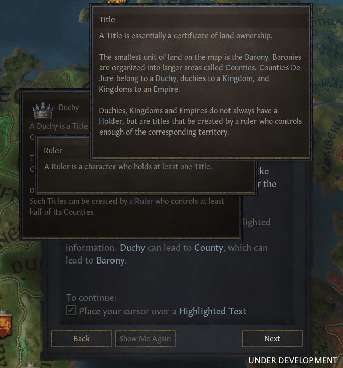

Tooltips in tooltips
7 September 2020
With the recent release of Crusader Kings 3 by Paradox Interactive, a new UI paradigm in the game stopped me in my tracks. There are a lot of lessons that web designers can learn from video game user interface design and while they aren't always transferrable, they are worth exploring. In this case it's the idea of having tooltips within tooltips.
Tooltips have become a standard component in user interface design. The majority of web UI frameworks include some form of tooltip, with Bootstrap having two types (Tooltips and Popovers). Wikipedia uses tooltips when hovering over links:

What about nested tooltips... on the web?
Hover over "small droplets" to begin
A respiratory droplet is a small aqueous droplet produced by exhalation, consisting of
saliva
 Saliva (commonly referred to as spit) is an extracellular fluid produced and secreted by salivary glands in the mouth. In
humans,
Saliva (commonly referred to as spit) is an extracellular fluid produced and secreted by salivary glands in the mouth. In
humans,
 Humans (Homo sapiens) are highly intelligent primates that have become the dominant species on Earth. They are the only extant members of the subtribe Hominina and—together with chimpanzees, gorillas, and orangutans—are part of the family Hominidae (the great apes, or hominids).
saliva is 99.5% water plus electrolytes, mucus, white blood cells, epithelial cells (from which DNA can be extracted), enzymes (such as amylase and lipase), antimicrobial agents such as secretory IgA, and lysozymes.
or mucus and other matter derived from
respiratory tract
The respiratory tract is the subdivision of the respiratory system involved with the process of respiration in mammals. The respiratory tract is lined with respiratory mucosa or respiratory epithelium.
surfaces. Droplet sizes range from <5 µm to 1000 µm. Large droplets fall to the ground or another surface before drying, but smaller ones fall slowly and dry so quickly...
Humans (Homo sapiens) are highly intelligent primates that have become the dominant species on Earth. They are the only extant members of the subtribe Hominina and—together with chimpanzees, gorillas, and orangutans—are part of the family Hominidae (the great apes, or hominids).
saliva is 99.5% water plus electrolytes, mucus, white blood cells, epithelial cells (from which DNA can be extracted), enzymes (such as amylase and lipase), antimicrobial agents such as secretory IgA, and lysozymes.
or mucus and other matter derived from
respiratory tract
The respiratory tract is the subdivision of the respiratory system involved with the process of respiration in mammals. The respiratory tract is lined with respiratory mucosa or respiratory epithelium.
surfaces. Droplet sizes range from <5 µm to 1000 µm. Large droplets fall to the ground or another surface before drying, but smaller ones fall slowly and dry so quickly...
Did you find it intuitive? Could you easily traverse up and down the tooltip chain? Note: this is a HTML/CSS example that I quickly put together so it's rough around the edges.
I found it suprisingly intuitive and easy to use. When you hover to reveal the first tooltip, you keep your cursor nice and still. After that, you locate a piece of information you want to learn more about and you hover over that. It might overlap the first tooltip, but that's fine. You've chosen to seek more information.
Another reason I like this idea, is that it matches how I think. When learning something new, there might be a supporting concept or idea I don't fully grasp. A nested tooltip is a great solution.
In the context of a complex grand strategy game like CK3, having explanatory text is necessary. The designers and developers at Paradox elegantly solved this by implementing tooltips within tooltips. Kudos to them.
Potential issues
- Accessibility. Well anything is possible with Javascript right? You could tab through the tooltips to get them working.
- User experience. It can be frustrating to move your cursor 1 pixel outside of the bounds of the element which removes the tooltip.
- How deep do you go? The designer should use discretion. An infinitely deep tooltip chain doesn't make sense. There might be some sweet number here like, 2 or 3 nested tooltips.
- Touch? I'm not sure how mobile works. You could just treat them as tappable elements.
I guess the question is: could the web embrace nested tooltips?